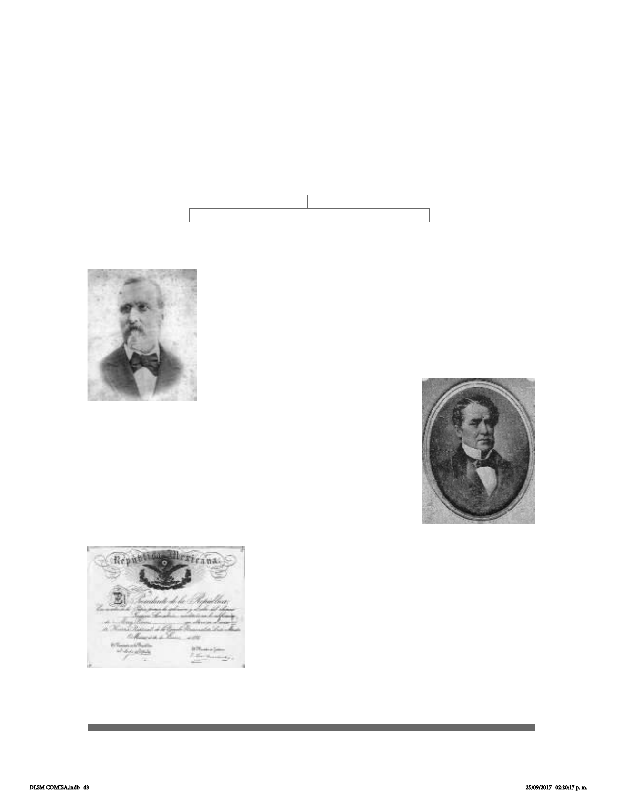

43
sordo francés llamado Laurent Clerc quien emigró a Estados Unidos e inuyó en el de-
sarrollo de ASL y en el Nuevo Mundo. Don Eduardo Huet, al haber aprendido la antigua
Lengua de Señas Francesa, emigró a Brasil y posteriormente a México. En 1866, junto
con Alcaraz, estableció la primera escuela de sordos enseñando a tres estudiantes sor-
dos; fue así como continuó el desarrollo de la Lengua de Señas Mexicana.
Una vez que Eduardo Huet estuvo en México, José Urbano y
Fonseca fue quien apoyó el proyecto ayudado por sus amigos
dentro de los cuales se encontraba al Alcalde Municipal de la
Ciudad de México, Don Ignacio Trigueros.
Don Eduardo Huet es ejemplo de iniciativa en nuestro país. Han
pasado 150 años y aún es muy difícil la situación en cuanto a
la atención del gobierno y de particulares sobre la situación de
los sordos en México. El señor Huet
dominaba tres idiomas y escribió un
Diccionario Universal de Señas para uso
de los Sordomudos.
“El Gobierno Federal expidió los decretos que dieron origen a la
Escuela para Sordomudos en 1867, fundada el 28 de noviembre
con sede en el exconvento de Corpus Christi, se establece
también una Escuela Normal de profesores y profesoras para
la enseñanza de los Sordo-mudos” (Cruz, 2008) y la Escuela
Nacional para Ciegos en 1870, vigente hasta la fecha. Es
importante señalar que la educación para los sordos se impartía
con el uso de la Lengua de
Señas.
En 1875, José Julián Martí Pérez, quien fue un héroe
nacional cubano y gran hombre de letras, escribió
en un artículo sobre la ENS. En ese tiempo, Martí se
encontraba exiliado en la Ciudad de México y escribía
regularmente en el periódico La Revista Universal,
donde precisamente apareció dicho artículo el 30 de
noviembre de 1875 titulado “La Escuela Nacional de
Sordomudos”.
Entre otros personajes destacados en México se
Eduardo Huet
Ignacio Trigueros
Eduardo Huet a Brasil en 1850
Lengua de Señas Brasilera (LIBRAS)
Eduardo Huet en 1860
Lengua de Señas Mexicana (LSM)
Geneaología de Lengua
Antigua Lengua de Señas Francesa
Documentación ocial que acre-
dita los estudios en la Escuela
Nacional de Sordomudos
DLSM COMISA.indb 43 25/09/2017 02:20:17 p. m.